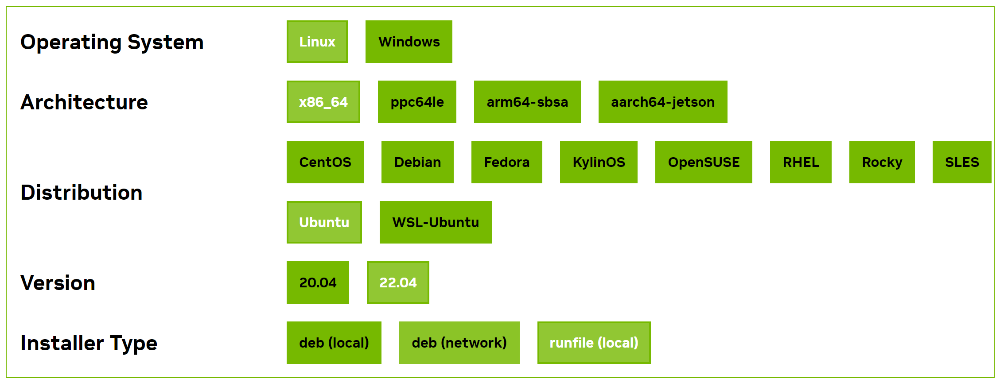
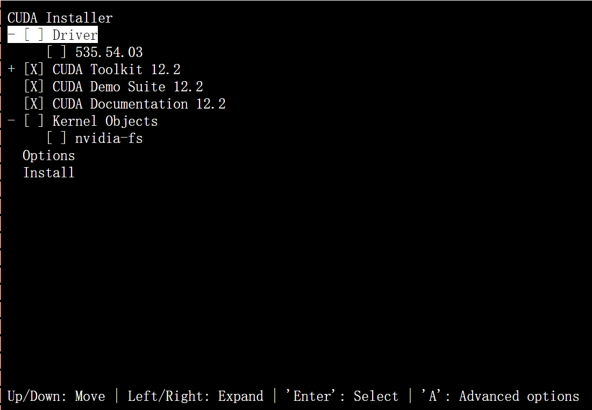
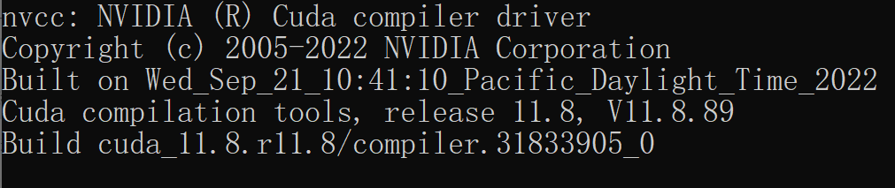
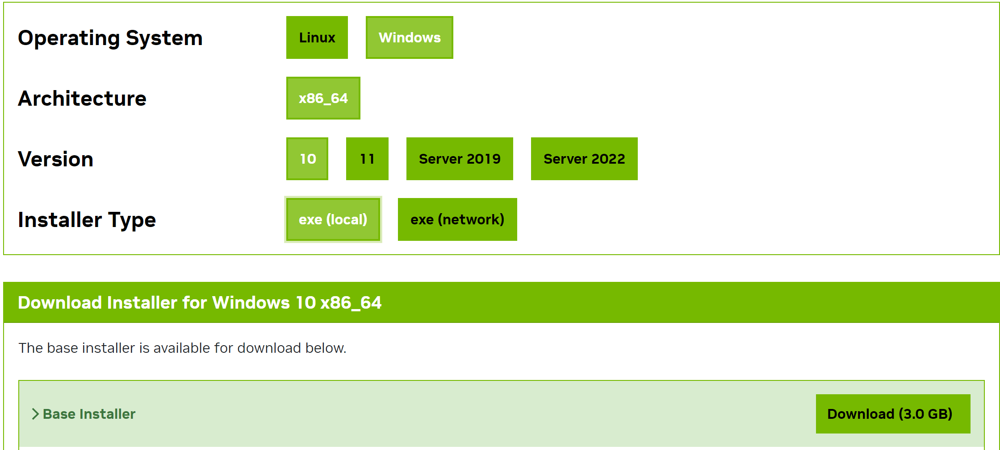
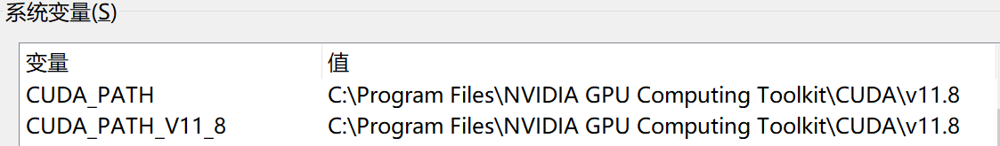
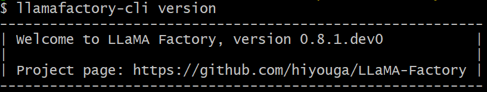

安装
Linux
CUDA 安装
CUDA 是由 NVIDIA 创建的一个并行计算平台和编程模型，它让开发者可以使用 NVIDIA 的 GPU 进行高性能的并行计算。
首先，在 https://developer.nvidia.com/cuda-gpus 查看您的 GPU 是否支持CUDA
保证当前 Linux 版本支持CUDA. 在命令行中输入
uname -m && cat /etc/*release，应当看到类似的输出
x86_64
DISTRIB_ID=Ubuntu
DISTRIB_RELEASE=22.04
检查是否安装了
gcc. 在命令行中输入gcc --version，应当看到类似的输出
gcc (Ubuntu 11.4.0-1ubuntu1~22.04) 11.4.0
在以下网址（https://developer.nvidia.com/cuda-gpus）下载所需的 CUDA，这里推荐12.2版本，注意需要根据上述输出选择正确版本。

如果您之前安装过 CUDA(例如为12.1版本)，需要先使用 sudo /usr/local/cuda-12.1/bin/cuda-uninstaller 卸载。如果该命令无法运行，可以直接：
sudo rm -r /usr/local/cuda-12.1/
sudo apt clean && sudo apt autoclean
卸载完成后运行以下命令并根据提示继续安装：
wget https://developer.download.nvidia.com/compute/cuda/12.2.0/local_installers/cuda_12.2.0_535.54.03_linux.run
sudo sh cuda_12.2.0_535.54.03_linux.run
注意:在确定 CUDA 自带驱动版本与 GPU 是否兼容之前,建议取消 Driver 的安装。

完成后输入 nvcc -V 检查是否出现对应的版本号，若出现则安装完成。

Windows
CUDA 安装
打开 设置 ，在 关于 中找到 Windows 规格 保证系统版本在以下列表中：
支持版本号 |
|---|
Microsoft Windows 11 21H2 |
Microsoft Windows 11 22H2-SV2 |
Microsoft Windows 11 23H2 |
Microsoft Windows 10 21H2 |
Microsoft Windows 10 22H2 |
Microsoft Windows Server 2022 |
选择对应的版本下载并根据提示安装。

打开 cmd 输入
nvcc -V，若出现类似内容则安装成功。

否则，检查系统环境变量，保证 CUDA 被正确导入。

LLaMA-Factory 安装
在安装 LLaMA-Factory 之前，请确保您安装了下列依赖:
运行以下指令以安装 LLaMA-Factory 及其依赖:
git clone --depth 1 https://github.com/hiyouga/LLaMA-Factory.git
cd LLaMA-Factory
pip install -e .
pip install -r requirements/metrics.txt
如果出现环境冲突，请尝试使用 pip install --no-deps -e . 解决
LLaMA-Factory 校验
完成安装后，可以通过使用 llamafactory-cli version 来快速校验安装是否成功
如果您能成功看到类似下面的界面，就说明安装成功了。

LLaMA-Factory 高级选项
Windows
QLoRA
如果您想在 Windows 上启用量化 LoRA（QLoRA），请根据您的 CUDA 版本选择适当的 bitsandbytes 发行版本。
pip install https://github.com/jllllll/bitsandbytes-windows-webui/releases/download/wheels/bitsandbytes-0.41.2.post2-py3-none-win_amd64.whl
FlashAttention-2
如果您要在 Windows 平台上启用 FlashAttention-2，请根据您的 CUDA 版本选择适当的 flash-attention 发行版本。
Extra Dependency
如果您有更多需求，请安装对应依赖。
名称 |
描述 |
|---|---|
torch |
开源深度学习框架 PyTorch，广泛用于机器学习和人工智能研究中。 |
torch-npu |
PyTorch 的昇腾设备兼容包。 |
metrics |
用于评估和监控机器学习模型性能。 |
deepspeed |
提供了分布式训练所需的零冗余优化器。 |
bitsandbytes |
用于大型语言模型量化。 |
hqq |
用于大型语言模型量化。 |
eetq |
用于大型语言模型量化。 |
gptq |
用于加载 GPTQ 量化模型。 |
awq |
用于加载 AWQ 量化模型。 |
aqlm |
用于加载 AQLM 量化模型。 |
vllm |
提供了高速并发的模型推理服务。 |
galore |
提供了高效全参微调算法。 |
badam |
提供了高效全参微调算法。 |
qwen |
提供了加载 Qwen v1 模型所需的包。 |
modelscope |
魔搭社区，提供了预训练模型和数据集的下载途径。 |
swanlab |
开源训练跟踪工具 SwanLab，用于记录与可视化训练过程 |
dev |
用于 LLaMA Factory 开发维护。 |